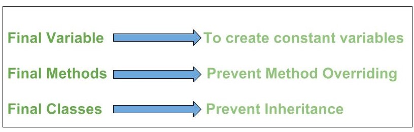

CS - Algo, DS - 1
Index:
Index:
General Coding Questions:
What are indexes?
What is a transaction? What are ACID properties?
Having and Where
What is the difference between having and where clause?
What are the different levels of abstraction in the DBMS?
A Subquery
UNION and UNION ALL
The major difference between DROP, TRUNCATE and DELETE commands are:
What is the purpose of normalization in DBMS?
What is the difference between instance, object, reference and a class?
The java.lang.Object.finalize()
Does a class inherit the constructors of its superclass?
Which java.util classes and interfaces support event handling?
If a class is declared without any access modifiers, where may the class be accessed?
Java.lang.Class class in Java
What is Method Overriding? What restrictions are placed on method overriding?
How to create Immutable class in Java?
Object class in Java
getClass(),
What is a Thread? What are the differences between process and thread?
Java best way for string find and replace?
ArrayList
How do I fill an ArrayList with objects, with each object inside being different?
Pass Arraylist as argument to function [closed]
Java Returning method which returns arraylist?
get only part of an Array in Java?
Array vs ArrayList in Java
Why Java is not a purely Object-Oriented Language?
Wrapper Classes in Java
Structure vs class in C++
Difference between C structures and C++ structures
Normalization
KEYS:
upcasting in Java:
Interface:
What are the necessary conditions for deadlock?
What happens if a non-recursive mutex is locked more than once.
How to find an element in array which sorted in descending order?
What is the simplest SQL Query to find the second largest value?
Coding Questions:
There is a table where only one row is fully repeated. Write a Query to find the Repeated row
How to swap two numbers without using a temporary variable?
Given an array A[] and a number x, check for pair in A[] with sum as x
Dijkstra’s shortest path algorithm | Greedy Algo-7
The Stock Span Problem
General Coding Questions:
Creating table with foreign key
Example 1:
CREATE TABLE `advisors` (
`advisor_id` int(11) NOT NULL AUTO_INCREMENT,
`first_name` varchar(255) NOT NULL,
`last_name` varchar(255) NOT NULL,
PRIMARY KEY (`advisor_id`)
)
CREATE TABLE `students` (
`student_id` int(11) NOT NULL AUTO_INCREMENT,
`first_name` varchar(255) NOT NULL,
`last_name` varchar(255) NOT NULL,
`advisor_id` int(11) DEFAULT NULL,
PRIMARY KEY (`student_id`),
KEY `advisor_id` (`advisor_id`),
CONSTRAINT `students_ibfk_1` FOREIGN KEY (`advisor_id`) REFERENCES `advisors` (`advisor_id`)
); |
Example 2:
CREATE TABLE orders (
order_id INT NOT NULL AUTO_INCREMENT PRIMARY KEY,
order_placed_date DATE NOT NULL,
);
CREATE TABLE products (
product_id INT NOT NULL AUTO_INCREMENT PRIMARY KEY,
name VARCHAR(255) NOT NULL,
price INT NOT NULL
);
CREATE TABLE products_to_orders (
product_to_order_id INT NOT NULL AUTO_INCREMENT PRIMARY KEY,
order_id INT NOT NULL,
product_id INT NOT NULL,
FOREIGN KEY (order_id) REFERENCES orders(order_id),
FOREIGN KEY (product_id) REFERENCES products(product_id)
); |
Encapsulation vs Data Abstraction
- Encapsulation is data hiding(information hiding) while Abstraction is detail hiding(implementation hiding).
- While encapsulation groups together data and methods that act upon the data, data abstraction deals with exposing the interface to the user and hiding the details of implementation.
Advantages of Abstraction
- It reduces the complexity of viewing the things.
- Avoids code duplication and increases reusability.
- Helps to increase the security of an application or program as only important details are provided to the user.
The key technical differences between an abstract class and an interface are:
- Abstract classes can have constants, members, method stubs (methods without a body) and defined methods, whereas interfaces can only have constants and methods stubs.
- Methods and members of an abstract class can be defined with any visibility, whereas all methods of an interface must be defined as public (they are defined public by default).
- When inheriting an abstract class, a concrete child class must define the abstract methods, whereas an abstract class can extend another abstract class and abstract methods from the parent class don't have to be defined.
- Similarly, an interface extending another interface is not responsible for implementing methods from the parent interface. This is because interfaces cannot define any implementation.
- A child class can only extend a single class (abstract or concrete), whereas an interface can extend or a class can implement multiple other interfaces.
- A child class can define abstract methods with the same or less restrictive visibility, whereas a class implementing an interface must define the methods with the exact same visibility (public).
Candidate Key: The minimal set of attributes which can determine a tuple uniquely. There can be more than 1 candidate key of a relation and its proper subset can’t determine tuple uniquely and it can’t be NULL.
Super Key: The set of attributes which can determine a tuple uniquely. A candidate key is always a super key but vice versa is not true.
Primary Key and Alternate Key: Among various candidate keys, one key is taken primary key and others are alternate keys.
What are indexes?
Ans: A database index is a data structure that improves the speed of data retrieval operations on a database table at the cost of additional writes and the use of more storage space to maintain the extra copy of data.
Data can be stored only in one order on disk. To support faster access according to different values, faster search like binary search for different values is desired, For this purpose, indexes are created on tables. These indexes need extra space on disk, but they allow faster search according to different frequently searched values.
What is a transaction? What are ACID properties?
Ans: A Database Transaction is a set of database operations that must be treated as whole, means either all operations are executed or none of them.
An example can be bank transaction from one account to another account. Either both debit and credit operations must be executed or none of them.
ACID (Atomicity, Consistency, Isolation, Durability) is a set of properties that guarantee that database transactions are processed reliably.
Having and Where
SELECT Student, SUM(score) AS total FROM Marks GROUP BY Student
HAVING total > 70 |
What is the difference between having and where clause?
Ans: HAVING is used to specify a condition for a group or an aggregate function used in select statement. The WHERE clause selects before grouping. The HAVING clause selects rows after grouping. Unlike HAVING clause, the WHERE clause cannot contain aggregate functions. (See this for examples).
What are the different levels of abstraction in the DBMS?
Ans: There are 3 levels of data abstraction in the DBMS.
They include:
- Physical Level: This is the lowest level of the data abstraction which states how the data is stored in the database.
- Logical Level: This is the next level of the data abstraction which states the type of the data and the relationship among the data that is stored in the database.
- View Level: This is the highest level in the data abstraction which shows/states only a part of the database.
A Subquery
is also known as a nested query i.e. a query written inside some query. When a Subquery is executed for each of the rows of the outer query then it is termed as a Correlated Subquery.
Example of Non-Correlated Subquery is:
Select * from EMP where ‘RIYA’ IN (Select Name from DEPT where EMP.EMPID=DEPT.EMPID)
UNION and UNION ALL
are used to join the data from 2 or more tables but UNION removes duplicate rows and picks the rows which are distinct after combining the data from the tables whereas UNION ALL does not remove the duplicate rows, it just picks all the data from the tables.
The major difference between DROP, TRUNCATE and DELETE commands are:
DROP and TRUNCATE commands are the DDL Commands which are used to delete tables from the database and once the table gets deleted, all the privileges and indexes that are related to the table also get deleted. These 2 operations cannot be rolled back and so should be used with great care.
DELETE Command, on the other hand, is a DML Command which is also used to delete rows from the table and this can be rolled back.
What is the purpose of normalization in DBMS?
Ans: Normalization is the process of analyzing the relational schemas which are based on their respective functional dependencies and the primary keys in order to fulfill certain properties.
The properties include:
- To minimize the redundancy of the Data.
- To minimize the Insert, Delete and Update Anomalies.
What is the difference between instance, object, reference and a class?
Class: A class is a user defined data type with set of data members & member functions
Object: An Object is an instance of a class
Reference: A reference is just like a pointer pointing to an object
Instance: This represents the values of data members of a class at a particular time
The java.lang.Object.finalize()
is called by the garbage collector on an object when garbage collection determines that there are no more references to the object. A subclass overrides the finalize method to dispose of system resources or to perform other cleanup.
Does a class inherit the constructors of its superclass?
A class does not inherit constructors from any of its super classes.
Which java.util classes and interfaces support event handling?
The EventObject class and the EventListener interface support event processing
If a class is declared without any access modifiers, where may the class be accessed?
A class that is declared without any access modifiers is said to have package or default access. This means that the class can only be accessed by other classes and interfaces that are defined within the same package.
Java.lang.Class class in Java
Java provides a class with name Class in java.lang package. Instances of the class Class represent classes and interfaces in a running Java application. The primitive Java types (boolean, byte, char, short, int, long, float, and double), and the keyword void are also represented as Class objects. It has no public constructor.
What is Method Overriding? What restrictions are placed on method overriding?
When a class defines a method using the same name, return type, and argument list as that of a method in its superclass, the method in the subclass is said to override the method present in the Superclass. When the method is invoked for an object of the
class, it is the new definition of the method that is called, and not the method definition from superclass.
Restrictions placed on method overriding
• Overridden methods must have the same name, argument list, and return type.
• The overriding method may not limit the access of the method it overrides. Methods may be overridden to be more public, not more private.
• The overriding method may not throw any exceptions that may not be thrown by the overridden method.
How to create Immutable class in Java?
Immutable class means that once an object is created, we cannot change its content. In Java, all the wrapper classes (like String, Boolean, Byte, Short) and String class is immutable. We can create our own immutable class as well.
Following are the requirements:
• Class must be declared as final (So that child classes can’t be created)
• Data members in the class must be declared as final (So that we can’t change the value of it after object creation)
• A parameterized constructor
• Getter method for all the variables in it
• No setters(To not have option to change the value of the instance variable)
Object class in Java
If a Class does not extend any other class then it is direct child class of Object and if extends another class then it is indirectly derived. Therefore the Object class methods are available to all Java classes. Hence Object class acts as a root of inheritance hierarchy in any Java Program
getClass(),
or the class-literal - Foo.class return a Class object, which contains some metadata about the class:
- name
- package
- methods
- fields
- constructors
- annotations
What is a Thread? What are the differences between process and thread?
A thread is a single sequence stream within a process. Because threads have some of the properties of processes, they are sometimes called lightweight processes. Threads are popular way to improve application through parallelism. For example, in a browser, multiple tabs can be different threads. MS word uses multiple threads, one thread to format the text, other thread to process inputs, etc.
A thread has its own program counter (PC), a register set, and a stack space. Threads are not independent of one other like processes as a result threads shares with other threads their code section, data section and OS resources like open files and signals.
Different Types of SQL JOINs
Here are the different types of the JOINs in SQL:


- (INNER) JOIN: Returns records that have matching values in both tables
- LEFT (OUTER) JOIN: Return all records from the left table, and the matched records from the right table
- RIGHT (OUTER) JOIN: Return all records from the right table, and the matched records from the left table
- FULL (OUTER) JOIN: Return all records when there is a match in either left or right table
JOIN Three Tables
The following SQL statement selects all orders with customer and shipper information:
Example
SELECT Orders.OrderID, Customers.CustomerName, Shippers.ShipperName
FROM ((Orders
INNER JOIN Customers ON Orders.CustomerID = Customers.CustomerID)
INNER JOIN Shippers ON Orders.ShipperID = Shippers.ShipperID); |
Having VS Where?
HAVING: is used to check conditions after the aggregation takes place.
WHERE: is used to check conditions before the aggregation takes place.
This code:
select City, CNT=Count(1)
From Address
Where State = 'MA'
Group By City |
Gives you a table of all cities in MA and the number of addresses in each city.
This code:
select City, CNT=Count(1)
From Address
Where State = 'MA'
Group By City
Having Count(1)>5 |
Gives you a table of cities in MA with more than 5 addresses and the number of addresses in each city.
Normal Forms:
First Normal Form (1NF): A table follows first normal form if for every row and column intersection (a cell in a table) in the table, there exists a single value and never a list of values. This is known as the atomic rule. Use the one-to-many relationship to follow 1NF.
Second Normal Form (2NF): A table follows second normal form if it is 1NF and every non-key column is fully dependent on the primary key. This also applies when a primary key has multiple columns, every non-key column should still depend on the entire set and not part of it.
This example does not follow 2NF:
Order ID (PK)
Product ID (PK)
Product Name
Since Product Name depends on Product ID but not Order ID.
Third Normal Form (3NF): A table is 3NF if it is 2NF and the non-key columns are independent of each other.
This example does not follow 3NF:
Grocery ID (PK)
Name
Price
Discount
Since Discount is dependent on Price, another non-key column.
Boyce Codd normal form (BCNF): It is an advance version of 3NF that’s why it is also referred as 3.5NF. BCNF is stricter than 3NF. A table complies with BCNF if it is in 3NF and for every functional dependency X->Y, X should be the super key of the table.
Java best way for string find and replace?
String.replaceAll("search", "replace") |
ArrayList
ArrayList<String> list = new ArrayList<String>();
list.add("A");
list.add("B"); |
ArrayList provides two overloaded remove() method.
a. remove(int index) : Accept index of object to be removed.
Example:
b. remove(Object obj) : Accept object to be removed.
Example:
al.remove(new Integer(1)); |
The size member function.
The java.util.ArrayList.indexOf(Object) method returns the index of the first occurrence of the specified element in this list, or -1 if this list does not contain the element.
int retval = arrlist.indexOf("E"); |
How do I fill an ArrayList with objects, with each object inside being different?
ArrayList<Matrices> list = new ArrayList<Matrices>();
list.add( new Matrices(1,1,10) );
list.add( new Matrices(1,2,20) ); Matrices temp = add.get(1); |
ArrayList<Gun> gunList = new ArrayList<Gun>();
for (int x=0; x<gunList.size(); x++)
System.out.println(gunList.get(x)); |
Pass Arraylist as argument to function [closed]
public void AnalyseArray(ArrayList<Integer> array) {
// Do something
}
...
ArrayList<Integer> A = new ArrayList<Integer>();
AnalyseArray(A); |
Java Returning method which returns arraylist?
public ArrayList<Integer> myNumbers() {
ArrayList<Integer> numbers = new ArrayList<Integer>();
numbers.add(5);
numbers.add(11);
numbers.add(3);
return(numbers);
}
} |
get only part of an Array in Java?
//index 0 1 2 3 4
int[] arr = {10, 20, 30, 40, 50};
Arrays.copyOfRange(arr, 0, 2); // returns {10, 20}
Arrays.copyOfRange(arr, 1, 4); // returns {20, 30, 40}
Arrays.copyOfRange(arr, 2, arr.sizr); // returns {30, 40, 50} (length = 5) |
Array vs ArrayList in Java
Array: Simple fixed sized arrays that we create in Java, like below
int arr[] = new int[10]
ArrayList : Dynamic sized arrays in Java that implement List interface.
ArrayList<Type> arrL = new ArrayList<Type>();
Here Type is the type of elements in ArrayList to
be created |
- An array is basic functionality provided by Java. ArrayList is part of collection framework in Java. Therefore array members are accessed using [], while ArrayList has a set of methods to access elements and modify them.
- Array is a fixed size data structure while ArrayList is not. One need not to mention the size of Arraylist while creating its object. Even if we specify some initial capacity, we can add more elements.
- Array can contain both primitive data types as well as objects of a class depending on the definition of the array. However, ArrayList only supports object entries, not the primitive data types.
Why Java is not a purely Object-Oriented Language?
- There are seven qualities to be satisfied for a programming language to be pure Object Oriented. They are:
- Encapsulation/Data Hiding
- Inheritance
- Polymorphism
- Abstraction
- All predefined types are objects
- All user defined types are objects
- All operations performed on objects must be only through methods exposed at the objects.
- Primitive Data Type ex. int, long, bool, float, char, etc as Objects: Smalltalk is a “pure” object-oriented programming language unlike Java and C++ as there is no difference between values which are objects and values which are primitive types. In Smalltalk, primitive values such as integers, booleans and characters are also objects.
In Java, we have predefined types as non-objects (primitive types).
- int is a primitive type. Variables of type int store the actual binary value for the integer you want to represent. int.parseInt("1") doesn't make sense because int is not a class and therefore doesn't have any methods.
- The static keyword: When we declares a class as static then it can be used without the use of an object in Java. If we are using static function or static variable then we can’t call that function or variable by using dot(.) or class object defying object oriented feature.
Wrapper Classes in Java
A Wrapper class is a class whose object wraps or contains a primitive(basic data types) data types. When we create an object to a wrapper class, it contains a field and in this field, we can store a primitive data types. In other words, we can wrap a primitive value into a wrapper class object.
Autoboxing: Automatic conversion of primitive types to the object of their corresponding wrapper classes is known as autoboxing. For example – conversion of int to Integer, long to Long, double to Double etc.
Example:
// Java program to demonstrate Autoboxing
import java.util.ArrayList;
class Autoboxing
{
public static void main(String[] args)
{
char ch = 'a';
// Autoboxing- primitive to Character object conversion
Character a = ch;
ArrayList<Integer> arrayList = new ArrayList<Integer>();
// Autoboxing because ArrayList stores only objects
arrayList.add(25);
// printing the values from object
System.out.println(arrayList.get(0));
}
} |
Unboxing: It is just the reverse process of autoboxing. Automatically converting an object of a wrapper class to its corresponding primitive type is known as unboxing. For example – conversion of Integer to int, Long to long, Double to double etc.
// Java program to demonstrate Unboxing
import java.util.ArrayList;
class Unboxing
{
public static void main(String[] args)
{
Character ch = 'a';
// unboxing - Character object to primitive conversion
char a = ch;
ArrayList<Integer> arrayList = new ArrayList<Integer>();
arrayList.add(24);
// unboxing because get method returns an Integer object
int num = arrayList.get(0);
// printing the values from primitive data types
System.out.println(num);
}
} |
Structure vs class in C++
- Members of a class are private by default and members of struct are public by default.
- When deriving a struct from a class/struct, default access-specifier for a base class/struct is public. And when deriving a class, default access specifier is private.
Difference between C structures and C++ structures
In C++, struct and class are exactly the same things, except for that struct defaults to public visibility and class defaults to private visibility.
Some important differences between the C and C++ structures:
- Member functions inside structure: Structures in C cannot have member functions inside structure but Structures in C++ can have member functions along with data members.
- Direct Initialization: We cannot directly initialize structure data members in C but we can do it in C++.
- Using struct keyword: In C, we need to use struct to declare a struct variable. In C++, struct is not necessary. For example, let there be a structure for Record. In C, we must use “struct Record” for Record variables. In C++, we need not use struct and using ‘Record‘ only would work.
- Static Members: C structures cannot have static members but is allowed in C++.
- Constructor creation in structure: Structures in C cannot have constructor inside structure but Structures in C++ can have Constructor creation.
- sizeof operator: This operator will generate 0 for an empty structure in C whereas 1 for an empty structure in C++.
- Data Hiding: C structures do not allow concept of Data hiding but is permitted in C++ as C++ is an object oriented language whereas C is not.
- Access Modifiers: C structures do not have access modifiers as these modifiers are not supported by the language. C++ structures can have this concept as it is inbuilt in the language.
There are also ways by which we can prevent deadlock.
- Avoid mutual exclusion
- Avoid hold and wait
- Avoid no preemption
- Avoid circular wait
As per operating system terminology, mutex and semaphore are kernel resources that provide synchronization services.
Mutexes are typically used to serialise access to a section of re-entrant code that cannot be executed concurrently by more than one thread. A mutex object only allows one thread into a controlled section, forcing other threads which attempt to gain access to that section to wait until the first thread has exited from that section.
A semaphore restricts the number of simultaneous users of a shared resource up to a maximum number. Threads can request access to the resource (decrementing the semaphore), and can signal that they have finished using the resource (incrementing the semaphore).
A mutex is locking mechanism used to synchronize access to a resource.
Semaphore is signaling mechanism (“I am done, you can carry on” kind of signal).
Cookies have six parameters that can be passed to them:
- The name of the cookie.
- The value of the cookie.
- The expiration date of the cookie - this determines how long the cookie will remain active in your browser.
- The path the cookie is valid for - this sets the URL path the cookie us valid in. Web pages outside of that path cannot use the cookie.
- The domain the cookie is valid for. This makes the cookie accessible to pages on any of the servers when a site uses multiple servers in a domain.
- The need for a secure connection - this indicates that the cookie can only be used under a secure server condition, such as a site using SSL.
Normalization
Normalization is the process of minimizing redundancy from a relation or set of relations. Redundancy in relation may cause insertion, deletion and updation anomalies. So, it helps to minimize the redundancy in relations. Normal forms are used to eliminate or reduce redundancy in database tables.
1. First Normal Form –
If a relation contain composite or multi-valued attribute, it violates first normal form or a relation is in first normal form if it does not contain any composite or multi-valued attribute. A relation is in first normal form if every attribute in that relation is singled valued attribute.
2. Second Normal Form –
To be in second normal form, a relation must be in first normal form and relation must not contain any partial dependency. A relation is in 2NF iff it has No Partial Dependency, i.e., no non-prime attribute (attributes which are not part of any candidate key) is dependent on any proper subset of any candidate key of the table.
3. Third Normal Form –
A relation is in third normal form, if there is no transitive dependency for non-prime attributes is it is in second normal form.
A relation is in 3NF iff at least one of the following condition holds in every non-trivial function dependency X –> Y
- X is a super key.
- Y is a prime attribute (each element of Y is part of some candidate key).
KEYS:
I'll take example of an Employee table:
Employee (
Employee ID,
FullName,
SSN,
DeptID
)
1. Candidate Key: are individual columns in a table that qualifies for uniqueness of all the rows. Here in Employee table EmployeeID & SSN are Candidate keys.
2. Primary Key: is the columns you choose to maintain uniqueness in a table. Here in Employee table you can choose either EmployeeID or SSN columns, EmployeeID is preferable choice, as SSN is a secure value.
3. Alternate Key: Candidate column other than the Primary column, like if EmployeeID is PK then SSN would be the Alternate key.
4. Super Key: If you add any other column/attribute to a Primary Key then it become a super key, like EmployeeID + FullName is a Super Key.
5. Composite Key: If a table do have a single columns that qualifies for a Candidate key, then you have to select 2 or more columns to make a row unique. Like if there is no EmployeeID or SSN columns, then you can make FullName + DateOfBirth as Composite primary Key. But still there can be a narrow chance of duplicate row.
upcasting in Java:
If the reference variable of Parent class refers to the object of Child class, it is known as upcasting. For example:
Example
class A{}
class B extends A{}
A a=new B();//upcasting
polymorphism in java:
An object of the type base class can be represented in more than one form depending upon the child class to which its referenced.
final keyword:

Interface:
An interface is a reference type in Java. It is similar to class. It is a collection of abstract methods. A class implements an interface, thereby inheriting the abstract methods of the interface.
Example:
/* File name : Animal.java */
interface Animal {
public void eat();
public void travel();
}
/* File name : MammalInt.java */
public class MammalInt implements Animal {
public void eat() {
System.out.println("Mammal eats");
}
public void travel() {
System.out.println("Mammal travels");
}
public int noOfLegs() {
return 0;
}
public static void main(String args[]) {
MammalInt m = new MammalInt();
m.eat();
m.travel();
}
}
|
What is the difference between overloading a method and overriding a method?
Method overloading deals with the notion of having two or more methods in the same class with the same name but different arguments.
void foo(int a)
void foo(int a, float b) |
Method overriding means having two methods with the same arguments, but different implementations. One of them would exist in the parent class, while another will be in the derived, or child class. The @Override annotation, while not required, can be helpful to enforce proper overriding of a method at compile time.
class Parent {
void foo(double d) {
// do something
}
}
class Child extends Parent {
@Override
void foo(double d){
// this method is overridden.
}
} |
What are the necessary conditions for deadlock?
- Mutual Exclusion: There is a resource that cannot be shared.
- Hold and Wait: A process is holding at least one resource and waiting for another resource which is with some other process.
- No Preemption: The operating system is not allowed to take a resource back from a process until process gives it back.
- Circular Wait: A set of processes are waiting for each other in circular form.
What happens if a non-recursive mutex is locked more than once.
Deadlock. If a thread which had already locked a mutex, tries to lock the mutex again, it will enter into the waiting list of that mutex, which results in deadlock. It is because no other thread can unlock the mutex. An operating system implementer can exercise care in identifying the owner of mutex and return if it is already locked by same thread to prevent deadlocks.
How to find an element in array which sorted in descending order?
https://stackoverflow.com/questions/28283693/use-a-binary-search-on-an-int-array-sorted-in-descending-order
while((lb <= ub) == isAscending){
int mid = (lb + ub)/2;
if(a[mid] == srchVal){
return mid;
}
else if(srchVal > a[mid]){
lb = mid + 1;
}
else{
ub = mid - 1;
}
}
return -1;
|
What is the simplest SQL Query to find the second largest value?
SELECT MAX( col )
FROM table
WHERE col < ( SELECT MAX( col )
FROM table )
|
OR
SELECT DISTINCT amount
FROM salary
ORDER BY amount DESC
LIMIT 1 , 1 |
First portion of LIMIT = starting index
Second portion of LIMIT = how many value
what is show and hide in jquery?
jQuery( ":visible" )
Elements are considered visible if they consume space in the document. Visible elements have a width or height that is greater than zero.
Elements with visibility: hidden or opacity: 0 are considered visible, since they still consume space in the layout.
jQuery( ":hidden" )
Elements can be considered hidden for several reasons:
- They have a CSS display value of none.
- They are form elements with type="hidden".
- Their width and height are explicitly set to 0.
- An ancestor element is hidden, so the element is not shown on the page.
The show() method shows the hidden, selected elements.
Note: show() works on elements hidden with jQuery methods and display:none in CSS (but not visibility:hidden).
The hide() method hides the selected elements.
Tip: This is similar to the CSS property display:none.
Note: Hidden elements will not be displayed at all (no longer affects the layout of the page).
Static keyword
static is a non-access modifier in Java which is applicable for the following:
- blocks
- variables
- methods
- nested classes
When a variable is declared as static, then a single copy of variable is created and shared among all objects at class level. Static variables are, essentially, global variables. All instances of the class share the same static variable.
Important points for static variables :-
We can create static variables at class-level only. See here
static block and static variables are executed in order they are present in a program.
Below is the java program to demonstrate that static block and static variables are executed in order they are present in a program.
Example:
// java program to demonstrate execution
// of static blocks and variables
class Test
{
// static variable
static int a = m1();
// static block
static {
System.out.println("Inside static block");
}
// static method
static int m1() {
System.out.println("from m1");
return 20;
}
// static method(main !!)
public static void main(String[] args)
{
System.out.println("Value of a : "+a);
System.out.println("from main");
}
} |
Output:
from m1
Inside static block
Value of a : 20
from main |
Static methods
When a method is declared with static keyword, it is known as static method. The most common example of a static method is main( ) method.As discussed above, Any static member can be accessed before any objects of its class are created, and without reference to any object.Methods declared as static have several restrictions:
- They can only directly call other static methods.
- They can only directly access static data.
- They cannot refer to this or super in any way.
When to use static variables and methods?
Use the static variable for the property that is common to all objects. For example, in class Student, all students shares the same college name. Use static methods for changing static variables.
Index:
General Coding Questions:
What are indexes?
What is a transaction? What are ACID properties?
Having and Where
What is the difference between having and where clause?
What are the different levels of abstraction in the DBMS?
A Subquery
UNION and UNION ALL
The major difference between DROP, TRUNCATE and DELETE commands are:
What is the purpose of normalization in DBMS?
What is the difference between instance, object, reference and a class?
The java.lang.Object.finalize()
Does a class inherit the constructors of its superclass?
Which java.util classes and interfaces support event handling?
If a class is declared without any access modifiers, where may the class be accessed?
Java.lang.Class class in Java
What is Method Overriding? What restrictions are placed on method overriding?
How to create Immutable class in Java?
Object class in Java
getClass(),
What is a Thread? What are the differences between process and thread?
Java best way for string find and replace?
ArrayList
How do I fill an ArrayList with objects, with each object inside being different?
Pass Arraylist as argument to function [closed]
Java Returning method which returns arraylist?
get only part of an Array in Java?
Array vs ArrayList in Java
Why Java is not a purely Object-Oriented Language?
Wrapper Classes in Java
Structure vs class in C++
Difference between C structures and C++ structures
Normalization
KEYS:
upcasting in Java:
Interface:
What are the necessary conditions for deadlock?
What happens if a non-recursive mutex is locked more than once.
How to find an element in array which sorted in descending order?
What is the simplest SQL Query to find the second largest value?
Coding Questions:
How to swap two numbers without using a temporary variable?
Given an array A[] and a number x, check for pair in A[] with sum as x
Dijkstra’s shortest path algorithm | Greedy Algo-7
The Stock Span Problem
Coding Questions:
There is a table where only one row is fully repeated. Write a Query to find the Repeated row
Name Section
abc CS1
bcd CS2
abc CS1
In the above table, we can find duplicate row using below query.
SELECT name, section FROM tbl
GROUP BY name, section
HAVING COUNT(*) > 1 |
How to swap two numbers without using a temporary variable?
// Program to swap two numbers without
// using temporary variable
import java.*;
class Geeks {
public static void main(String a[])
{
int x = 10;
int y = 5;
x = x + y;
y = x - y;
x = x - y;
System.out.println("After swaping:"
+ " x = " + x + ", y = " + y);
}
} |
Given an array A[] and a number x, check for pair in A[] with sum as x
// Java implementation using Hashing
import java.io.*;
import java.util.HashSet;
class PairSum
{
static void printpairs(int arr[],int sum)
{
HashSet<Integer> s = new HashSet<Integer>();
for (int i=0; i<arr.length; ++i)
{
int temp = sum-arr[i];
// checking for condition
if (temp>=0 && s.contains(temp))
{
System.out.println("Pair with given sum " +
sum + " is (" + arr[i] +
", "+temp+")");
}
s.add(arr[i]);
}
}
// Main to test the above function
public static void main (String[] args)
{
int A[] = {1, 4, 45, 6, 10, 8};
int n = 16;
printpairs(A, n);
}
} |
Modified:
// Java implementation using Hashing
import java.io.*;
import java.util.HashSet;
class PairSum
{
static void printpairs(int arr[],int sum)
{
HashSet<Integer> s = new HashSet<Integer>();
for (int i=0; i<arr.length; ++i)
{
int temp = sum-arr[i];
// checking for condition
if (s.contains(temp))
{
System.out.println("Pair with given sum " +
sum + " is (" + arr[i] +
", "+temp+")");
}
else
{
s.add(arr[i]);
}
}
}
// Main to test the above function
public static void main (String[] args)
{
int A[] = {1, 4, 45, 6, 10, 8, 8, -9, 25};
int n = 16;
printpairs(A, n);
}
}
// This article is contributed by Aakash Hasija |
Dijkstra’s shortest path algorithm | Greedy Algo-7
// A Java program for Dijkstra's single source shortest path algorithm.
// The program is for adjacency matrix representation of the graph
import java.util.*;
import java.lang.*;
import java.io.*;
class ShortestPath
{
// A utility function to find the vertex with minimum distance value,
// from the set of vertices not yet included in shortest path tree
static final int V=9;
int minDistance(int dist[], Boolean sptSet[])
{
// Initialize min value
int min = Integer.MAX_VALUE, min_index=-1;
for (int v = 0; v < V; v++)
if (sptSet[v] == false && dist[v] <= min)
{
min = dist[v];
min_index = v;
}
return min_index;
}
// A utility function to print the constructed distance array
void printSolution(int dist[], int n)
{
System.out.println("Vertex Distance from Source");
for (int i = 0; i < V; i++)
System.out.println(i+" tt "+dist[i]);
}
// Funtion that implements Dijkstra's single source shortest path
// algorithm for a graph represented using adjacency matrix
// representation
void dijkstra(int graph[][], int src)
{
int dist[] = new int[V]; // The output array. dist[i] will hold
// the shortest distance from src to i
// sptSet[i] will true if vertex i is included in shortest
// path tree or shortest distance from src to i is finalized
Boolean sptSet[] = new Boolean[V];
// Initialize all distances as INFINITE and stpSet[] as false
for (int i = 0; i < V; i++)
{
dist[i] = Integer.MAX_VALUE;
sptSet[i] = false;
}
// Distance of source vertex from itself is always 0
dist[src] = 0;
// Find shortest path for all vertices
for (int count = 0; count < V-1; count++)
{
// Pick the minimum distance vertex from the set of vertices
// not yet processed. u is always equal to src in first
// iteration.
int u = minDistance(dist, sptSet);
// Mark the picked vertex as processed
sptSet[u] = true;
// Update dist value of the adjacent vertices of the
// picked vertex.
for (int v = 0; v < V; v++)
// Update dist[v] only if is not in sptSet, there is an
// edge from u to v, and total weight of path from src to
// v through u is smaller than current value of dist[v]
if (!sptSet[v] && graph[u][v]!=0 &&
dist[u] != Integer.MAX_VALUE &&
dist[u]+graph[u][v] < dist[v])
dist[v] = dist[u] + graph[u][v];
}
// print the constructed distance array
printSolution(dist, V);
}
// Driver method
public static void main (String[] args)
{
/* Let us create the example graph discussed above */
int graph[][] = new int[][]{{0, 4, 0, 0, 0, 0, 0, 8, 0},
{4, 0, 8, 0, 0, 0, 0, 11, 0},
{0, 8, 0, 7, 0, 4, 0, 0, 2},
{0, 0, 7, 0, 9, 14, 0, 0, 0},
{0, 0, 0, 9, 0, 10, 0, 0, 0},
{0, 0, 4, 14, 10, 0, 2, 0, 0},
{0, 0, 0, 0, 0, 2, 0, 1, 6},
{8, 11, 0, 0, 0, 0, 1, 0, 7},
{0, 0, 2, 0, 0, 0, 6, 7, 0}
};
ShortestPath t = new ShortestPath();
t.dijkstra(graph, 0);
}
}
//This code is contributed by Aakash Hasija |
The Stock Span Problem
The stock span problem is a financial problem where we have a series of n daily price quotes for a stock and we need to calculate span of stock’s price for all n days.
The span Si of the stock’s price on a given day i is defined as the maximum number of consecutive days just before the given day, for which the price of the stock on the current day is less than or equal to its price on the given day.
For example, if an array of 7 days prices is given as {100, 80, 60, 70, 60, 75, 85}, then the span values for corresponding 7 days are {1, 1, 1, 2, 1, 4, 6}
// Java implementation for brute force method to calculate stock span values
import java.util.Arrays;
class GFG
{
// method to calculate stock span values
static void calculateSpan(int price[], int n, int S[])
{
// Span value of first day is always 1
S[0] = 1;
// Calculate span value of remaining days by linearly checking
// previous days
for (int i = 1; i < n; i++)
{
S[i] = 1; // Initialize span value
// Traverse left while the next element on left is smaller
// than price[i]
for (int j = i-1; (j>=0)&&(price[i]>=price[j]); j--)
S[i]++;
}
}
// A utility function to print elements of array
static void printArray(int arr[])
{
System.out.print(Arrays.toString(arr));
}
// Driver program to test above functions
public static void main(String[] args)
{
int price[] = {10, 4, 5, 90, 120, 80};
int n = price.length;
int S[]= new int[n];
// Fill the span values in array S[]
calculateSpan(price, n, S);
// print the calculated span values
printArray(S);
}
}
// This code is contributed by Sumit Ghosh |
Write a program to print all permutations of a given string?

// Java program to print all permutations of a
// given string.
public class Permutation
{
public static void main(String[] args)
{
String str = "ABC";
int n = str.length();
Permutation permutation = new Permutation();
permutation.permute(str, 0, n-1);
}
/**
* permutation function
* @param str string to calculate permutation for
* @param l starting index
* @param r end index
*/
private void permute(String str, int l, int r)
{
if (l == r)
System.out.println(str);
else
{
for (int i = l; i <= r; i++)
{
str = swap(str,l,i);
permute(str, l+1, r);
str = swap(str,l,i);
}
}
}
/**
* Swap Characters at position
* @param a string value
* @param i position 1
* @param j position 2
* @return swapped string
*/
public String swap(String a, int i, int j)
{
char temp;
char[] charArray = a.toCharArray();
temp = charArray[i] ;
charArray[i] = charArray[j];
charArray[j] = temp;
return String.valueOf(charArray);
}
}
// This code is contributed by Mihir Joshi
|
Construct a Binary Search Tree from given postorder
/* A O(n) program for construction of BST from
postorder traversal */
/* A binary tree node has data, pointer to left child
and a pointer to right child */
class Node
{
int data;
Node left, right;
Node(int data)
{
this.data = data;
left = right = null;
}
}
// Class containing variable that keeps a track of overall
// calculated postindex
class Index
{
int postindex = 0;
}
class BinaryTree
{
// A recursive function to construct BST from post[].
// postIndex is used to keep track of index in post[].
Node constructTreeUtil(int post[], Index postIndex,
int key, int min, int max, int size)
{
// Base case
if (postIndex.postindex < 0)
return null;
Node root = null;
// If current element of post[] is in range, then
// only it is part of current subtree
if (key > min && key < max)
{
// Allocate memory for root of this subtree and decrement
// *postIndex
root = new Node(key);
postIndex.postindex = postIndex.postindex - 1;
if (postIndex.postindex > 0)
{
// All nodes which are in range {key..max} will go in
// right subtree, and first such node will be root of right
// subtree
root.right = constructTreeUtil(post, postIndex,
post[postIndex.postindex],key, max, size);
// Contruct the subtree under root
// All nodes which are in range {min .. key} will go in left
// subtree, and first such node will be root of left subtree.
root.left = constructTreeUtil(post, postIndex,
post[postIndex.postindex],min, key, size);
}
}
return root;
}
// The main function to construct BST from given postorder
// traversal. This function mainly uses constructTreeUtil()
Node constructTree(int post[], int size)
{
Index index = new Index();
index.postindex = size - 1;
return constructTreeUtil(post, index, post[index.postindex],
Integer.MIN_VALUE, Integer.MAX_VALUE, size);
}
// A utility function to print inorder traversal of a Binary Tree
void printInorder(Node node)
{
if (node == null)
return;
printInorder(node.left);
System.out.print(node.data + " ");
printInorder(node.right);
}
// Driver program to test above functions
public static void main(String[] args)
{
BinaryTree tree = new BinaryTree();
int post[] = new int[]{1, 7, 5, 50, 40, 10};
int size = post.length;
Node root = tree.constructTree(post, size);
System.out.println("Inorder traversal of the constructed tree:");
tree.printInorder(root);
}
} |
Find the maximum length distinct substring in a given a string,
e.g. S = “abbaacdekdfjjk” o/p: acdek
// C++ program to print subarray with sum as given sum
#include <bits/stdc++.h>
#include <unordered_map>
using namespace std;
// Function to print subarray with sum as given sum
void distinctSubArray(char arr[], int n)
{
// create an empty map
unordered_map<char, int> map;
// Maintains sum of elements so far
int curr_size = 0, start = 0, mapitr = 0, end, sizetemp = 0;
int maxend = 0, maxstart = 0;
for (int i = 0; i < n; i++)
{
if (map.find(arr[i]) == map.end())
{
map[arr[i]] = mapitr++;
end = i;
}
else
{
map.clear();
start = i;
}
curr_size = end - start;
if (curr_size > sizetemp)
{
sizetemp = curr_size;
maxend = end;
maxstart = start;
}
}
for(int i = maxstart; i <= maxend; i++)
cout<<arr[i];
}
// Driver program to test above function
int main()
{
char arr[] = "sdhfjshdjfhsjdhfjshdfeiruwyiryiwueytwfshdfgfshwo";
int n = sizeof(arr) / sizeof(arr[0]);
distinctSubArray(arr, n);
return 0;
} |
|
|
Minimum Swaps for Bracket Balancing
Examples:
Input : []][][
Output : 2
First swap: Position 3 and 4
[][]][
Second swap: Position 5 and 6
[][][]
Input : [[][]]
Output : 0
String is already balanced.
Solution:
Time Complexity = O(N)
Extra Space = O(N)
https://www.geeksforgeeks.org/minimum-swaps-bracket-balancing/
// Program to count swaps required to balance string
#include <iostream>
#include <vector>
#include <algorithm>
using namespace std;
// Function to calculate swaps required
long swapCount(string s)
{
// Keep track of '['
vector<int> pos;
for (int i = 0; i < s.length(); ++i)
if (s[i] == '[')
pos.push_back(i);
int count = 0; // To count number of encountered '['
int p = 0; // To track position of next '[' in pos
long sum = 0; // To store result
for (int i = 0; i < s.length(); ++i)
{
// Increment count and move p to next position
if (s[i] == '[')
{
++count;
++p;
}
else if (s[i] == ']')
--count;
// We have encountered an unbalanced part of string
if (count < 0)
{
// Increment sum by number of swaps required
// i.e. position of next '[' - current position
sum += pos[p] - i;
swap(s[i], s[pos[p]]);
++p;
// Reset count to 1
count = 1;
}
}
return sum;
}
// Driver code
int main()
{
string s = "[]][][";
cout << swapCount(s) << "\n";
s = "[[][]]";
cout << swapCount(s) << "\n";
return 0;
} |
Print numbers in words?
/* Program to print a given number in words. The program handles
numbers from 0 to 9999 */
#include <stdio.h>
#include <string.h>
#include <stdlib.h>
/* A function that prints given number in words */
void convert_to_words(char *num)
{
int len = strlen(num); // Get number of digits in given number
/* Base cases */
if (len == 0) {
fprintf(stderr, "empty string\n");
return;
}
if (len > 4) {
fprintf(stderr, "Length more than 4 is not supported\n");
return;
}
/* The first string is not used, it is to make array indexing simple */
char *single_digits[] = { "zero", "one", "two", "three", "four",
"five", "six", "seven", "eight", "nine"};
/* The first string is not used, it is to make array indexing simple */
char *two_digits[] = {"", "ten", "eleven", "twelve", "thirteen", "fourteen",
"fifteen", "sixteen", "seventeen", "eighteen", "nineteen"};
/* The first two string are not used, they are to make array indexing simple*/
char *tens_multiple[] = {"", "", "twenty", "thirty", "forty", "fifty",
"sixty", "seventy", "eighty", "ninety"};
char *tens_power[] = {"hundred", "thousand"};
/* Used for debugging purpose only */
printf("\n%s: ", num);
/* For single digit number */
if (len == 1) {
printf("%s\n", single_digits[*num - '0']);
return;
}
/* Iterate while num is not '\0' */
while (*num != '\0') {
/* Code path for first 2 digits */
if (len >= 3) {
if (*num -'0' != 0) {
printf("%s ", single_digits[*num - '0']);
printf("%s ", tens_power[len-3]); // here len can be 3 or 4
}
--len;
}
/* Code path for last 2 digits */
else {
/* Need to explicitly handle 10-19. Sum of the two digits is
used as index of "two_digits" array of strings */
if (*num == '1') {
int sum = *num - '0' + *(num + 1)- '0';
printf("%s\n", two_digits[sum]);
return;
}
/* Need to explicitely handle 20 */
else if (*num == '2' && *(num + 1) == '0') {
printf("twenty\n");
return;
}
/* Rest of the two digit numbers i.e., 21 to 99 */
else {
int i = *num - '0';
printf("%s ", i? tens_multiple[i]: "");
++num;
if (*num != '0')
printf("%s ", single_digits[*num - '0']);
}
}
++num;
}
}
/* Driver program to test above function */
int main(void)
{
convert_to_words("9923");
convert_to_words("523");
convert_to_words("89");
convert_to_words("8989");
return 0;
} |
Given a n*n matrix print the elements of the matrix in spiral form?
#include <stdio.h>
#include <stdlib.h>
#include <string.h>
void spiralPrint(int val, int size, int arr[size][size])
{
int i, j, k, l;
for (i = val; i < size - val; i++)
{
printf(" %d,", arr[val][i]);
}
for (j = val + 1; j < size - val; j++)
{
printf(" %d,", arr[j][size - val - 1]);
}
for(k = size - val - 2; k >= val; k--)
{
printf(" %d,", arr[size - val - 1][k]);
}
for(l = size - val - 2; l > val; l--)
{
printf(" %d,", arr[l][val]);
}
}
int main(int argc, char const *argv[])
{
int i, j, size;
printf("Enter the size of Array: ");
scanf("%d", &size);
int arr[size][size];
for (i = 0; i < size; i++)
{
for (j = 0; j < size; j++)
{
scanf("%d", &arr[i][j]);
}
}
printf("\nSpiral Print:\n");
for (i = 0; i < size / 2; i++)
{
spiralPrint(i, size, arr);
}
/*
printf("\n\n\n");
for (i = 0; i < size; i++)
{
for (j = 0; j < size; j++)
{
printf("\narr[%d][%d] = %d", i, j, arr[i][j]);
}
}
*/
return 0;
}
|
An m*n matrix consisting of 0’s and 1’s print the sub-matrix with largest number of 1’s.
// C/C++ code for Maximum size square sub-matrix with all 1s
#include<stdio.h>
#define bool int
#define R 6
#define C 5
void printMaxSubSquare(bool M[R][C])
{
int i,j;
int S[R][C];
int max_of_s, max_i, max_j;
/* Set first column of S[][]*/
for(i = 0; i < R; i++)
S[i][0] = M[i][0];
/* Set first row of S[][]*/
for(j = 0; j < C; j++)
S[0][j] = M[0][j];
/* Construct other entries of S[][]*/
for(i = 1; i < R; i++)
{
for(j = 1; j < C; j++)
{
if(M[i][j] == 1)
S[i][j] = min(S[i][j-1], S[i-1][j], S[i-1][j-1]) + 1;
else
S[i][j] = 0;
}
}
/* Find the maximum entry, and indexes of maximum entry
in S[][] */
max_of_s = S[0][0]; max_i = 0; max_j = 0;
for(i = 0; i < R; i++)
{
for(j = 0; j < C; j++)
{
if(max_of_s < S[i][j])
{
max_of_s = S[i][j];
max_i = i;
max_j = j;
}
}
}
printf("Maximum size sub-matrix is: \n");
for(i = max_i; i > max_i - max_of_s; i--)
{
for(j = max_j; j > max_j - max_of_s; j--)
{
printf("%d ", M[i][j]);
}
printf("\n");
}
}
/* UTILITY FUNCTIONS */
/* Function to get minimum of three values */
int min(int a, int b, int c)
{
int m = a;
if (m > b)
m = b;
if (m > c)
m = c;
return m;
}
/* Driver function to test above functions */
int main()
{
bool M[R][C] = {{0, 1, 1, 0, 1},
{1, 1, 0, 1, 0},
{0, 1, 1, 1, 0},
{1, 1, 1, 1, 0},
{1, 1, 1, 1, 1},
{0, 0, 0, 0, 0}};
printMaxSubSquare(M);
getchar();
} |
Print subarrays with sum equal to given value
Compile with: g++ -std=c++0x sumSubArray.cpp
// C++ program to print subarray with sum as given sum
#include <bits/stdc++.h>
#include <unordered_map>
using namespace std;
// Function to print subarray with sum as given sum
void subArraySum(int arr[], int n, int sum)
{
// create an empty map
unordered_map<int, int> map;
// Maintains sum of elements so far
int curr_sum = 0;
for (int i = 0; i < n; i++)
{
// add current element to curr_sum
curr_sum = curr_sum + arr[i];
if (curr_sum == sum)
{
cout << "Sum found between indexes "
<< 0 << " to " << i << endl;
}
// If curr_sum - sum already exists in map
// we have found a subarray with target sum
if (map.find(curr_sum - sum) != map.end())
{
cout << "Sum found between indexes "
<< map[curr_sum - sum] + 1
<< " to " << i << endl;
}
map[curr_sum] = i;
}
}
// Driver program to test above function
int main()
{
int arr[] = {1, 2, 4, 8, 7, 5, 1, 2, 3};
int n = sizeof(arr) / sizeof(arr[0]);
int sum = 3;
subArraySum(arr, n, sum);
return 0;
} |
Print the nodes at a given distance in a tree.
#include <iostream>
using namespace std;
// A binary Tree node
struct node
{
int data;
struct node *left, *right;
};
/* Recursive function to print all the nodes at distance k in the
tree (or subtree) rooted with given root. See */
void printkdistanceNodeDown(node *root, int k)
{
// Base Case
if (root == NULL || k < 0) return;
// If we reach a k distant node, print it
if (k==0)
{
cout << root->data << endl;
return;
}
// Recur for left and right subtrees
printkdistanceNodeDown(root->left, k-1);
printkdistanceNodeDown(root->right, k-1);
}
// A utility function to create a new binary tree node
node *newnode(int data)
{
node *temp = new node;
temp->data = data;
temp->left = temp->right = NULL;
return temp;
}
// Driver program to test above functions
int main()
{
/* Let us construct the tree shown in above diagram */
node * root = newnode(20);
root->left = newnode(8);
root->right = newnode(22);
root->left->left = newnode(4);
root->left->right = newnode(12);
root->left->right->left = newnode(10);
root->left->right->right = newnode(14);
node * target = root->left->right;
printkdistanceNodeDown(root, target, 2);
return 0; }
|
Tree implementation in Java
// Java Program to demonstrate adjacency list
// representation of graphs
import java.util.LinkedList;
public class GFG
{
// A user define class to represent a graph.
// A graph is an array of adjacency lists.
// Size of array will be V (number of vertices
// in graph)
static class Graph
{
int V;
LinkedList<Integer> adjListArray[];
// constructor
Graph(int V)
{
this.V = V;
// define the size of array as
// number of vertices
adjListArray = new LinkedList[V];
// Create a new list for each vertex
// such that adjacent nodes can be stored
for(int i = 0; i < V ; i++){
adjListArray[i] = new LinkedList<>();
}
}
}
// Adds an edge to an undirected graph
static void addEdge(Graph graph, int src, int dest)
{
// Add an edge from src to dest.
graph.adjListArray[src].add(dest);
// Since graph is undirected, add an edge from dest
// to src also
graph.adjListArray[dest].add(src);
}
// A utility function to print the adjacency list
// representation of graph
static void printGraph(Graph graph)
{
for(int v = 0; v < graph.V; v++)
{
System.out.println("Adjacency list of vertex "+ v);
System.out.print("head");
for(Integer pCrawl: graph.adjListArray[v]){
System.out.print(" -> "+pCrawl);
}
System.out.println("\n");
}
}
// Driver program to test above functions
public static void main(String args[])
{
// create the graph given in above figure
int V = 5;
Graph graph = new Graph(V);
addEdge(graph, 0, 1);
addEdge(graph, 0, 4);
addEdge(graph, 1, 2);
addEdge(graph, 1, 3);
addEdge(graph, 1, 4);
addEdge(graph, 2, 3);
addEdge(graph, 3, 4);
// print the adjacency list representation of
// the above graph
printGraph(graph);
}
}
// This code is contributed by Sumit Ghosh
Graph Traversal
|
Stack implementation in Java
// Java code for stack implementation
import java.io.*;
import java.util.*;
class Test
{
// Pushing element on the top of the stack
static void stack_push(Stack<Integer> stack)
{
for(int i = 0; i < 5; i++)
{
stack.push(i);
}
}
// Popping element from the top of the stack
static void stack_pop(Stack<Integer> stack)
{
System.out.println("Pop :");
for(int i = 0; i < 5; i++)
{
Integer y = (Integer) stack.pop();
System.out.println(y);
}
}
// Displaying element on the top of the stack
static void stack_peek(Stack<Integer> stack)
{
Integer element = (Integer) stack.peek();
System.out.println("Element on stack top : " + element);
}
// Searching element in the stack
static void stack_search(Stack<Integer> stack, int element)
{
Integer pos = (Integer) stack.search(element);
if(pos == -1)
System.out.println("Element not found");
else
System.out.println("Element is found at position " + pos);
}
public static void main (String[] args)
{
Stack<Integer> stack = new Stack<Integer>();
stack_push(stack);
stack_pop(stack);
stack_push(stack);
stack_peek(stack);
stack_search(stack, 2);
stack_search(stack, 6);
}
}
Java program to check if there is exist a path between two vertices
// Java program to check if there is exist a path between two vertices
// of a graph.
import java.io.*;
import java.util.*;
import java.util.LinkedList;
// This class represents a directed graph using adjacency list
// representation
class Graph
{
private int V; // No. of vertices
private LinkedList<Integer> adj[]; //Adjacency List
//Constructor
Graph(int v)
{
V = v;
adj = new LinkedList[v];
for (int i=0; i<v; ++i)
adj[i] = new LinkedList();
}
//Function to add an edge into the graph
void addEdge(int v,int w) { adj[v].add(w); }
//prints BFS traversal from a given source s
Boolean isReachable(int s, int d)
{
LinkedList<Integer>temp;
// Mark all the vertices as not visited(By default set
// as false)
boolean visited[] = new boolean[V];
// Create a queue for BFS
LinkedList<Integer> queue = new LinkedList<Integer>();
// Mark the current node as visited and enqueue it
visited[s]=true;
queue.add(s);
// 'i' will be used to get all adjacent vertices of a vertex
Iterator<Integer> i;
while (queue.size()!=0)
{
// Dequeue a vertex from queue and print it
s = queue.poll();
int n;
i = adj[s].listIterator();
// Get all adjacent vertices of the dequeued vertex s
// If a adjacent has not been visited, then mark it
// visited and enqueue it
while (i.hasNext())
{
n = i.next();
// If this adjacent node is the destination node,
// then return true
if (n==d)
return true;
// Else, continue to do BFS
if (!visited[n])
{
visited[n] = true;
queue.add(n);
}
}
}
// If BFS is complete without visited d
return false;
}
// Driver method
public static void main(String args[])
{
// Create a graph given in the above diagram
Graph g = new Graph(4);
g.addEdge(0, 1);
g.addEdge(0, 2);
g.addEdge(1, 2);
g.addEdge(2, 0);
g.addEdge(2, 3);
g.addEdge(3, 3);
int u = 1;
int v = 3;
if (g.isReachable(u, v))
System.out.println("There is a path from " + u +" to " + v);
else
System.out.println("There is no path from " + u +" to " + v);;
u = 3;
v = 1;
if (g.isReachable(u, v))
System.out.println("There is a path from " + u +" to " + v);
else
System.out.println("There is no path from " + u +" to " + v);;
}
}
// This code is contributed by Aakash Hasija
|
Java program to determine if binary tree is height balanced or not
/* Java program to determine if binary tree is
height balanced or not */
/* A binary tree node has data, pointer to left child,
and a pointer to right child */
class Node
{
int data;
Node left, right;
Node(int d)
{
data = d;
left = right = null;
}
}
class BinaryTree
{
Node root;
/* Returns true if binary tree with root as root is height-balanced */
boolean isBalanced(Node node)
{
int lh; /* for height of left subtree */
int rh; /* for height of right subtree */
/* If tree is empty then return true */
if (node == null)
return true;
/* Get the height of left and right sub trees */
lh = height(node.left);
rh = height(node.right);
if (Math.abs(lh - rh) <= 1
&& isBalanced(node.left)
&& isBalanced(node.right))
return true;
/* If we reach here then tree is not height-balanced */
return false;
}
/* UTILITY FUNCTIONS TO TEST isBalanced() FUNCTION */
/* The function Compute the "height" of a tree. Height is the
number of nodes along the longest path from the root node
down to the farthest leaf node.*/
int height(Node node)
{
/* base case tree is empty */
if (node == null)
return 0;
/* If tree is not empty then height = 1 + max of left
height and right heights */
return 1 + Math.max(height(node.left), height(node.right));
}
public static void main(String args[])
{
BinaryTree tree = new BinaryTree();
tree.root = new Node(1);
tree.root.left = new Node(2);
tree.root.right = new Node(3);
tree.root.left.left = new Node(4);
tree.root.left.right = new Node(5);
tree.root.left.left.left = new Node(8);
if(tree.isBalanced(tree.root))
System.out.println("Tree is balanced");
else
System.out.println("Tree is not balanced");
}
}
// This code has been contributed by Mayank Jaiswal(mayank_24)
|
Check whether a tree is BST
// Java program to find minimum value node in Binary Search Tree
// A binary tree node
class Node {
int data;
Node left, right, parent;
Node(int d) {
data = d;
left = right = parent = null;
}
}
class BinaryTree {
static Node head;
/* Given a binary search tree and a number,
inserts a new node with the given number in
the correct place in the tree. Returns the new
root pointer which the caller should then use
(the standard trick to avoid using reference
parameters). */
Node insert(Node node, int data) {
/* 1. If the tree is empty, return a new,
single node */
if (node == null) {
return (new Node(data));
} else {
Node temp = null;
/* 2. Otherwise, recur down the tree */
if (data <= node.data) {
temp = insert(node.left, data);
node.left = temp;
temp.parent = node;
} else {
temp = insert(node.right, data);
node.right = temp;
temp.parent = node;
}
/* return the (unchanged) node pointer */
return node;
}
}
Node inOrderSuccessor(Node root, Node n) {
// step 1 of the above algorithm
if (n.right != null) {
return minValue(n.right);
}
// step 2 of the above algorithm
Node p = n.parent;
while (p != null && n == p.right) {
n = p;
p = p.parent;
}
return p;
}
/* Given a non-empty binary search tree, return the minimum data
value found in that tree. Note that the entire tree does not need
to be searched. */
Node minValue(Node node) {
Node current = node;
/* loop down to find the leftmost leaf */
while (current.left != null) {
current = current.left;
}
return current;
}
// Driver program to test above functions
public static void main(String[] args) {
BinaryTree tree = new BinaryTree();
Node root = null, temp = null, suc = null, min = null;
root = tree.insert(root, 20);
root = tree.insert(root, 8);
root = tree.insert(root, 22);
root = tree.insert(root, 4);
root = tree.insert(root, 12);
root = tree.insert(root, 10);
root = tree.insert(root, 14);
temp = root.left.right.right;
suc = tree.inOrderSuccessor(root, temp);
if (suc != null) {
System.out.println("Inorder successor of " + temp.data +
" is " + suc.data);
} else {
System.out.println("Inorder successor does not exist");
}
}
}
// This code has been contributed by Mayank Jaiswal
|
Check one binary tree is a subtree of another
// Java program to check if binary tree is subtree of another binary tree
// A binary tree node
class Node
{
int data;
Node left, right, nextRight;
Node(int item)
{
data = item;
left = right = nextRight = null;
}
}
class BinaryTree
{
Node root1,root2;
/* A utility function to check whether trees with roots as root1 and
root2 are identical or not */
boolean areIdentical(Node root1, Node root2)
{
/* base cases */
if (root1 == null && root2 == null)
return true;
if (root1 == null || root2 == null)
return false;
/* Check if the data of both roots is same and data of left and right
subtrees are also same */
return (root1.data == root2.data
&& areIdentical(root1.left, root2.left)
&& areIdentical(root1.right, root2.right));
}
/* This function returns true if S is a subtree of T, otherwise false */
boolean isSubtree(Node T, Node S)
{
/* base cases */
if (S == null)
return true;
if (T == null)
return false;
/* Check the tree with root as current node */
if (areIdentical(T, S))
return true;
/* If the tree with root as current node doesn't match then
try left and right subtrees one by one */
return isSubtree(T.left, S)
|| isSubtree(T.right, S);
}
public static void main(String args[])
{
BinaryTree tree = new BinaryTree();
// TREE 1
/* Construct the following tree
26
/ \
10 3
/ \ \
4 6 3
\
30 */
tree.root1 = new Node(26);
tree.root1.right = new Node(3);
tree.root1.right.right = new Node(3);
tree.root1.left = new Node(10);
tree.root1.left.left = new Node(4);
tree.root1.left.left.right = new Node(30);
tree.root1.left.right = new Node(6);
// TREE 2
/* Construct the following tree
10
/ \
4 6
\
30 */
tree.root2 = new Node(10);
tree.root2.right = new Node(6);
tree.root2.left = new Node(4);
tree.root2.left.right = new Node(30);
if (tree.isSubtree(tree.root1, tree.root2))
System.out.println("Tree 2 is subtree of Tree 1 ");
else
System.out.println("Tree 2 is not a subtree of Tree 1");
}
}
// This code has been contributed by Mayank Jaiswal
PriorityQueue in JavaPriority queue doesnt follow FIFO while deletion (pop). It follows priority while popping, default natural ordering, else based on comparator function used while inputting the values.
|